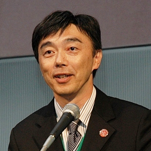

Rubyの生誕20周年を記念したパーティをRubyアソシエーションと日本Rubyの会が合同で企画しました。当日は「Rubyのパパ」まつもとゆきひろさんをお迎えして、Rubyの20歳の1日早いお誕生日を皆でお祝いしたいと思います。奮ってご参加ください。
※このサイトはInternetExplorerを使って閲覧をする場合、表示が崩れることがございます。
- 開催日時 2013年2月23日(土) 14:00 〜 17:00, 開場 13:15(予定)
- 会場 楽天タワー2号館 （東京都品川区東品川4-13-9） （MAP）
- チケット 2,000円（前払い） ハッシュタグ #ruby20party
Rubyコミッタのかたは無料で招待とさせていただきます。参加申し込み時のアンケートにてsvnユーザー名をお知らせいただき、事前支払いは行わないようにお願いします。こちらで入場無料の手続きをいたします。時間帯によっては支払い未了のため参加がキャンセルされることがありますが、気にせずお待ちください。お手数をおかけします。

まつもと ゆきひろ
株式会社ネットワーク応用通信研究所フェロー、一般財団法人Rubyアソシエーション理事長、
一般社団法人日本Rubyの会名誉会員、など、肩書多数。
プログラミング言語Rubyの生みの親。三女一男の父でもある。温泉好き。鳥取県出身、島根県在住。牡牛座。O型。
総合司会 前田 修吾
A programmer.
島根県松江市 ·http://shugo.net/jit/

高橋征義 「Rubyの20年間を振り返って」
1972年生まれ、札幌出身。電子書籍の制作と販売を行う（株）達人出版会代表取締役プログラマ。また、2005年より「日本Rubyの会」代表理事を務める。著書に『たのしいRuby』『Rails3レシピブック』（共著含む）等。好きな作家は新井素子。
森 正弥（Congratulations speech）
アクセンチュア株式会社を経て2006年、楽天株式会社入社。
現在、同社 執行役員 兼 楽天技術研究所長、アーキテクチャ部 部長、ビッグデータ部 副部長としてマネジメントに従事。
情報処理学会、電子情報通信学会各会員、しまねOSS協議会 顧問、 Rubyアソシエーション評議員、IPA Ruby標準化WG委員、企業情報化協会 ビッグデータ戦略的ビジネス活用コンソーシアム副委員長。
著作に『クラウド大全』（日経BP社、共著）、『クラウド時代のヘルスケアモニタリングシステム構築と応用』（シーエムシー出版、共著）、『ウェブ大変化 パワーシフトの始まり』（近代セールス社）がある。
石塚圭樹（Congratulations speech）
株式会社ペンタアドバンストラボラトリーズ 研究所長。Rubyの名付け親。 オブジェクト指向技術に関わって28年になる。現在もRubyやオブジェクト指向システムの研究開発やコンサルティングに携わっている。

久野 靖（Congratulations speech）
久野 靖 (くの やすし) 1956年生。東京工業大学助手、筑波大学講師、助教授を経て現在、筑波大学ビジネスサイエンス系教授。プログラミング言語、プログラミング環境、情報教育などに興味を持つ。著書に「入門JavaScript」など、翻訳書に「ビューティフルコード」などがある。
ただただし（Congratulations speech）
プログラマ、Webアクセス解析士を経て、現在はセキュリティ関連事業に従事。 学生時代からフリーソフトウェア開発に関わりはじめ、かれこれ四半世紀。RubyではWebアプリケーションを中心に開発。tDiaryプロジェクト創始者。 妻1人、猫2匹。
角谷信太郎（Congratulations speech）
(株)永和システムマネジメント勤務。一般社団法人日本Rubyの会理事。Rails Girls in Japanの事務局のオッサン。Asakusa.rb幹部(自称)。『アジャイルサムライ』監訳者、『JavaからRubyへ』翻訳者など。好きなメソッドはObject#extend。twitter: @kakutani

井上 浩（Congratulations speech）
株式会社ネットワーク応用通信研究所を1997年から代表取締役社長として経営している。
設立当初www.linux.or.jpの管理運営を会社で行っていた、OSS を活用した事業を展開し、まつもとゆきひろ氏もが入社した1997年からシステム開発の主要言語は Ruby を採用している。
現在は松江市に妻と4人の子どもと暮らしている。
座右の銘は「禍福は糾える縄のごとし」または「人生最後はチャラ」
悩みは長女を可愛がりすぎることである。
西村賢 × Matz 「Ruby20周年インタビュー」
ITエキスパート向け情報サイト「＠IT」の副編集長。PC雑誌編集者、ライターとして月刊アスキー、週刊アスキーなどを経て、2007年にアイティメディア入社。エンタープライズや技術ネタで取材、執筆中。ブログ「Rails Hub情報局」ではRuby/Rails関連情報を追っている。質問・回答コミュニティの「QA@IT」を2012年5月に立ち上げ。
池澤あやか（花束プレゼンテーター）
1991年生まれの21歳（Rubyの1つ年上）、東京都出身。慶應義塾大学環境情報学部に在学中（大学３年生）で、テレビ、映画、舞台などに多数出演する現役アイドル。第6回《東宝シンデレラ》審査員特別賞受賞。 また、Rubyプログラマーとして、現在、マックピープルに徒然プログラミング「とりあえずRuby」を絶賛連載中。特技は日本舞踊、平泳ぎ、バトミントン、似顔絵を描くこと。